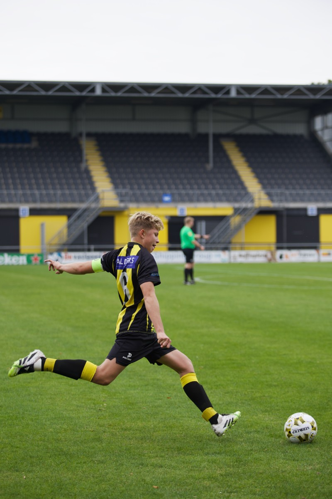
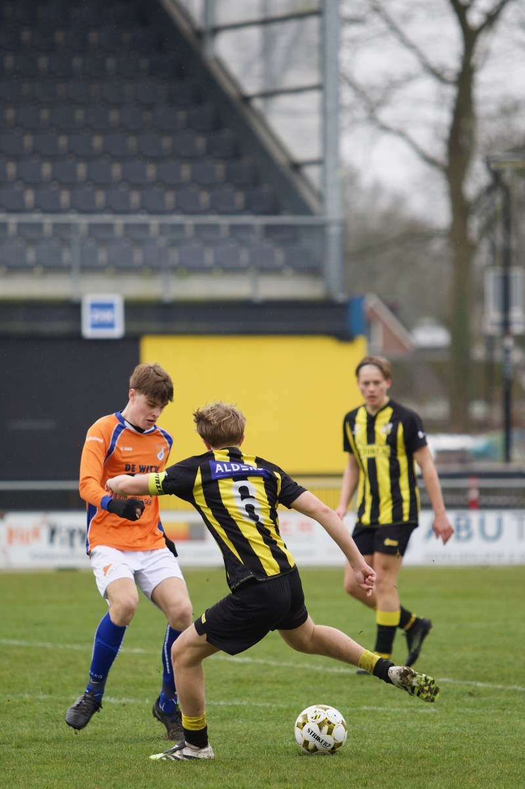
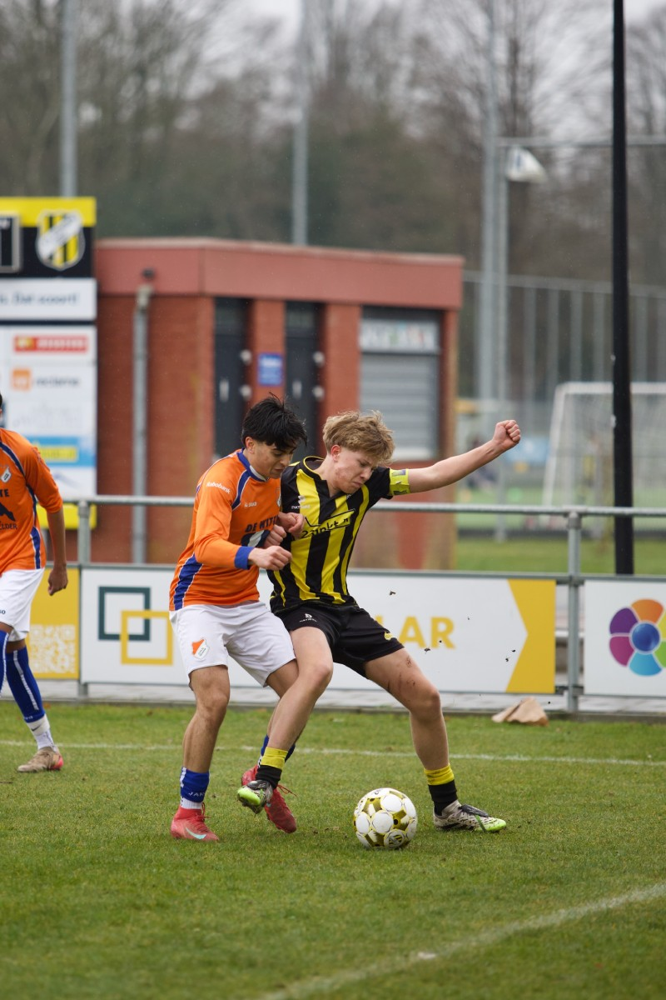
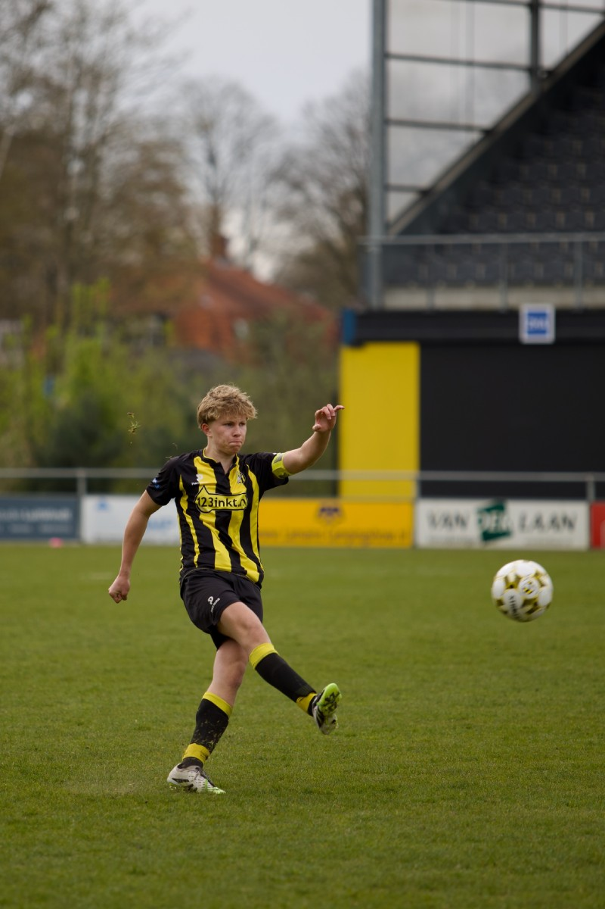
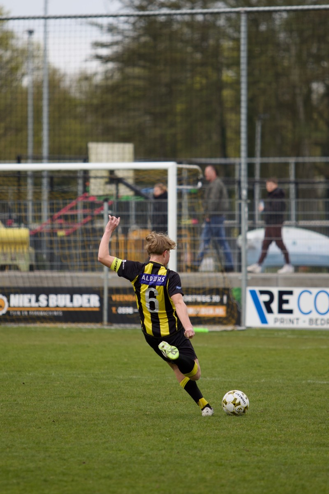
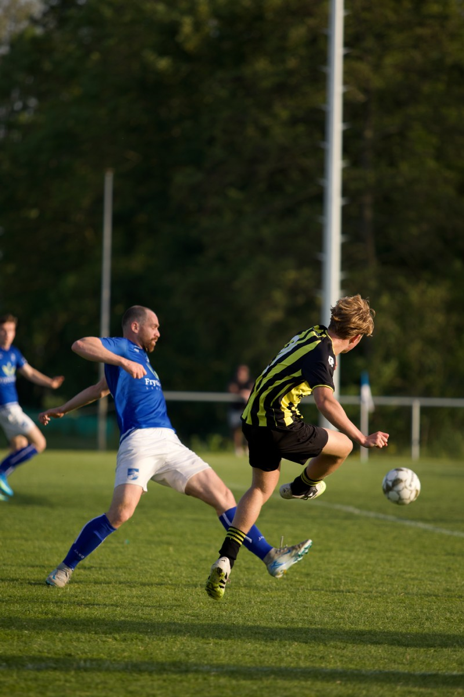

Leon Tehubijuluw
Voetbal • Veendam 1894 • Aanvaller / middenveld
Voetbal • Veendam 1894 • Aanvaller / middenveld
Geboren: 5 februari 2010
Club: Veendam 1894
Jeugd: Veendam 1894, FC Groningen
Speelt al op jonge leeftijd in de jeugd van Veendam 1894.
Heeft een periode in de jeugd van FC Groningen meegedraaid.
Maakte in de nacompetitie minuten in het eerste elftal van Veendam 1894 op 16-jarige leeftijd.





